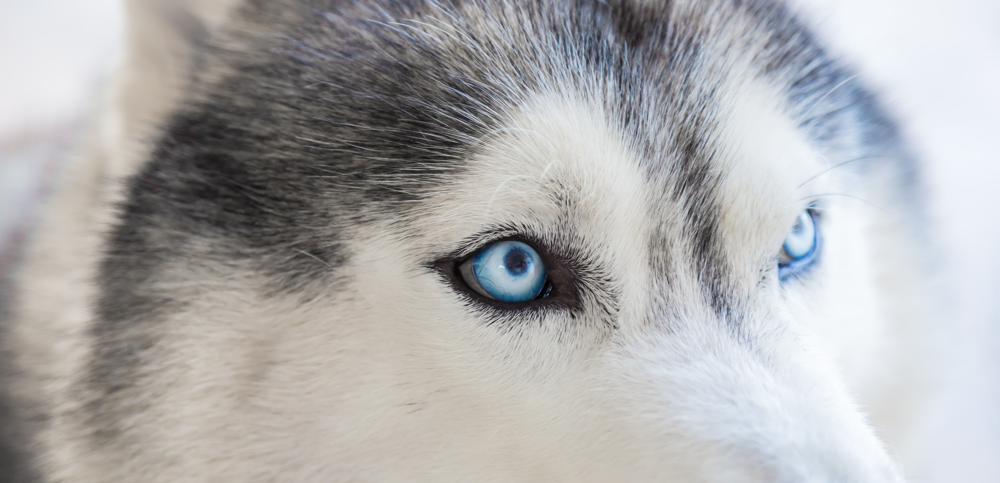
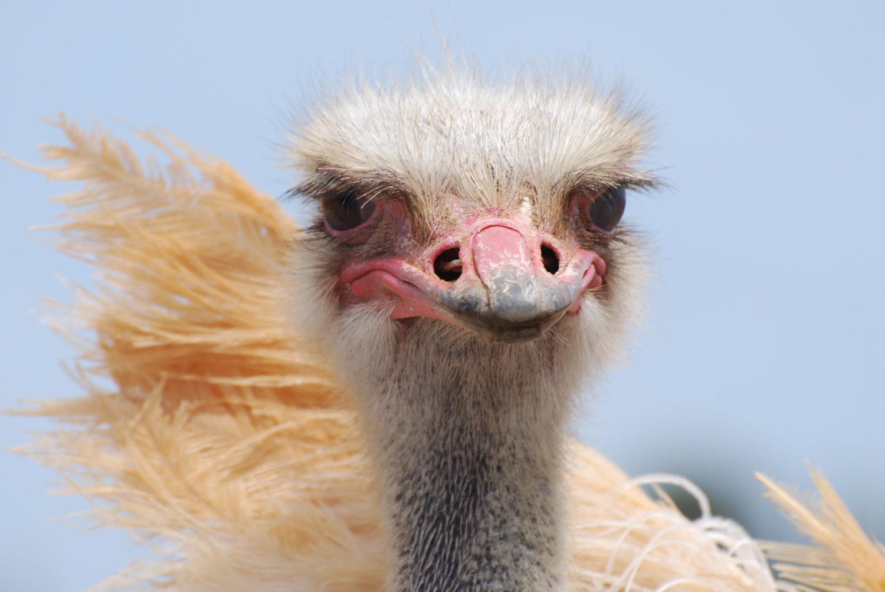
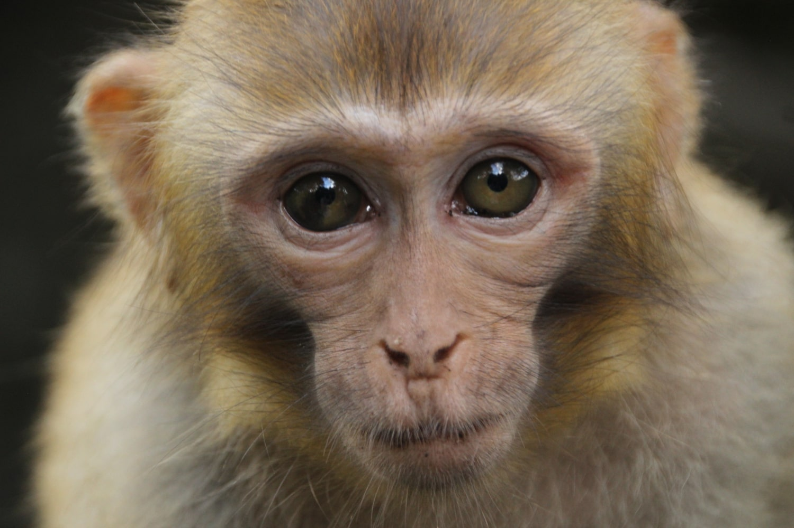
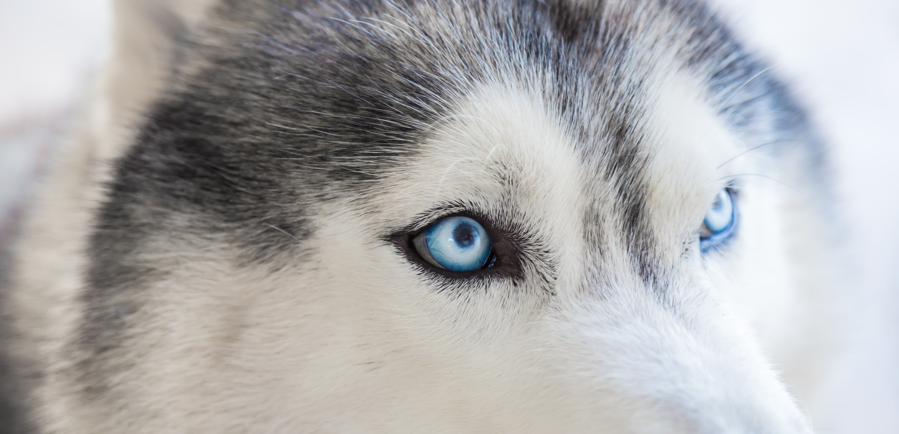
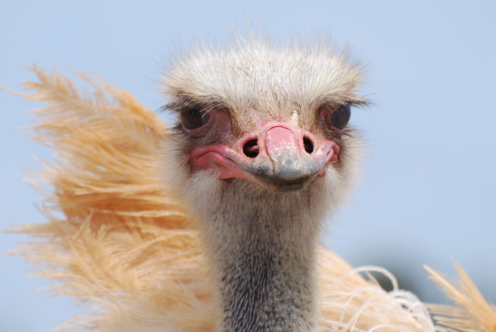
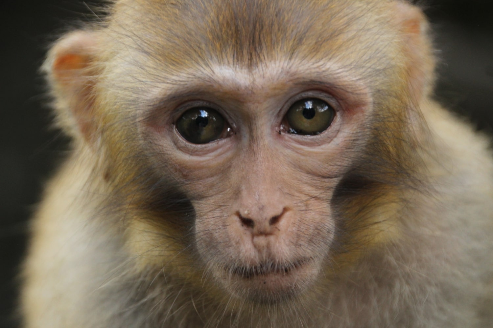

Cuida tu visión , cuida tu forma de ver las cosas! Cristal tu mejor servicio del momento! 👀 Cristal es una empresa que concientiza acerca del cuidado visual y sus ayudas.
Tu asesoria visual favorita!
Si quieres saber más acerca de la visión y los animales haz click!
 




